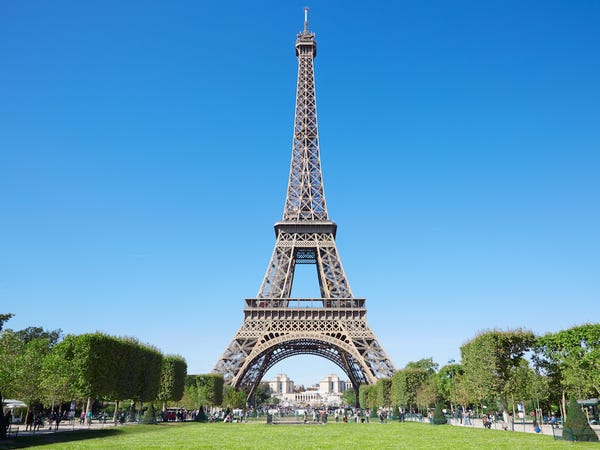
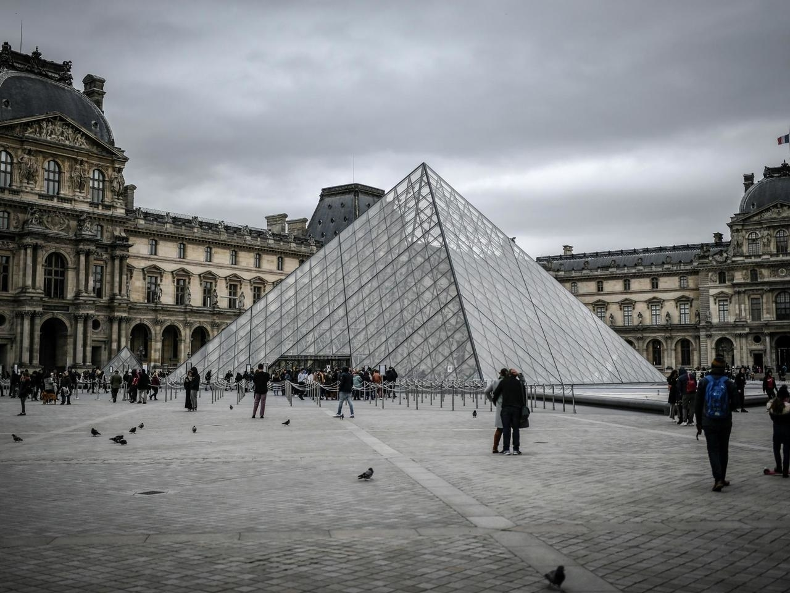
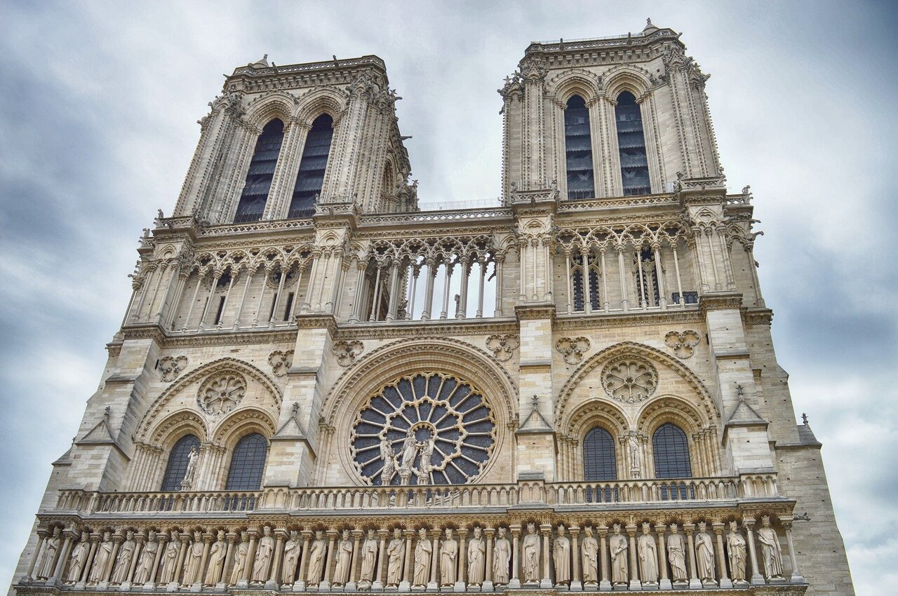
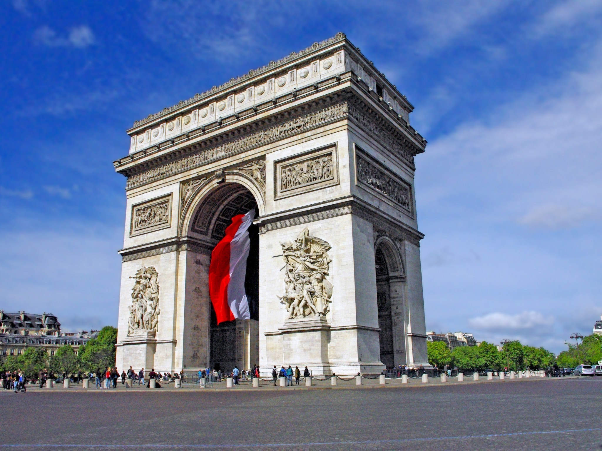
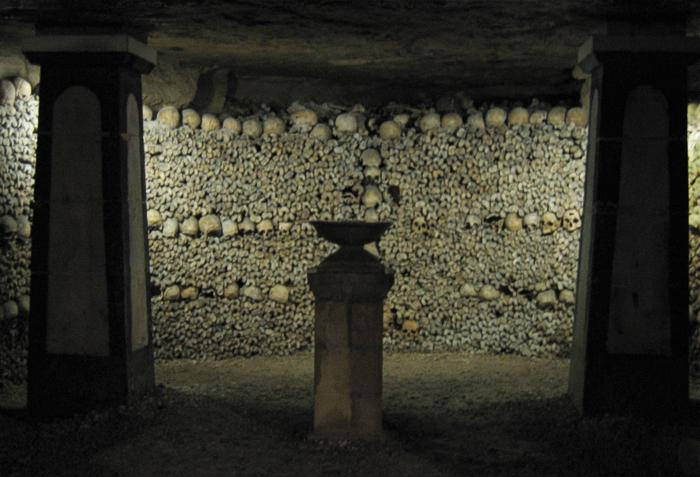

The Eiffel Tower
 The most well-known landmark in the heart of Paris is available for all ages to tour. To have the luxury of exploring The Eiffel Tower all the way to the top, with the privilege of elevator access, it is 3,20€ (≈$380) for ages 4-11 , 13,00€ (≈$1,540) for ages 12-24, 25,90€ (≈$3,070) for ages 25 plus, and 6,50€ (≈$770) for handicapped explorers.
This enormous tower standing 1,000 feet tall includes three floors, 1,665 steps and typically 25,000 people a day. Play a game, do some cardio, take pictures, and enjoy a delicious meal at one of the restaurants located inside the tower.
The Louvre

This famous monument charges €17 (≈$20) for tourists aged 18 and older . However, The Lourve still presents extremely humble FREE admission to those under 18 years old all year round and for all visitors under 26 years old on Friday evenings.
The Lourve, which is part of the Louvre Palace, is largest art museum on Earth and a historic monument in Paris. With more than 380,000 objects and 35,000 works of art, plus the very affordable prices, it's no suprise that this attraction is one of the pride and joys of Paris.
Notre Dame

The Notre Dame Cathedral, not to be confused with the University of Notre Dame nor the Disney movie, used to have free admission to Notre Dame. However, to enter the tower itself there was a fee of €8.50 (≈$10) and a fee of €6 (≈$7) to enter the crypt.
The medieval Catholic cathedral had the hearts of many with its historic organ, colourful rose windows, gargolye scultpures, immense church bells and religious imagery. The cathedral has remained tragically closed following the infamous fire of April 15, 2019.
Arc de Triomphe

With a stunning view of Paris, Arc de Triomphe is free the 1st Sunday of the month at the beginning and end of the year. Free admission for under 18 years, those between 18 to 25 years who are European residents and to those who are handicapped. Otherwise, tickets are 13,00 € (≈$1,550)
The Arc de Triomphe is a monument which honors soldiers who fought and laid their life for France during the the French Revolutionary and Napoleonic Wars. In the Arc de Triomphe you can find the names of all French victories and generals inscribed on its inner and outer surfaces. Visitors can also pay respects at the Tomb of the Unknown Soldier.
The Catacombs

Care for some goosebumps and chills on a spooky adventure? Consider visiting The Catacombs of Paris for €24 (≈$29) with an advanced ticket, perhaps take your child for a scare for €5 (≈$6) . 'Last minute' same-day tickets are available for a lower price but with an increased hassle. Audio guides are also available for a little bit exta.
The Catacombs of Paris is a mass cemetery which holds over six million Parisians. The catacombs were previously open to visits under strict conditions. Later it was closed completely because of church opposition to exposing human remains to public display. Later, visit frequency slowly began to increase from one a month, twice a month to eventually allow visitors on a daily basis.
Centre Pompidou

At the Centre Pompidou, the first Sunday of every month welcomes free admission to the mueseum for all. Otherwise, there will be a fee of €14 (≈$17) to enter. Tickets have multiple variables to determine the exact cost; varying from eligibility of reduced ticket prices, access to certain exhibitions, "show and concert" ticket for any performing shows, "Cinema" ticket and Paris Museum Pass all affect the outcome of ticket prices.
The main treats included inside of the Centre Pompidou are the Public Information Library with its vast collections and the Musée National d'Art Moderne, which is the largest museum for modern art in Europe. The Centre Pompidou named after Georges Pompidou, the President of France from 1969 to 1974 who commissioned the building